Now playing
Artwork fills the bar and fades at the edges. The player opens on the full cover.

渋い
Shibui keeps the clock, the song, and the machine in one thin strip. The rest of the screen stays yours.
Artwork fills the bar and fades at the edges. The player opens on the full cover.
Live use on the bar. Open a chip for the meters and how long the machine has been up.
The installer asks what belongs on the bar. Search, power, and the dashboard stay one click away.